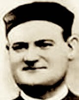

Imagen del Santo
Historia
Florentín Felipe Naya fue un mártir español nacido en Zaragoza. Fue uno de los muchos religiosos asesinados durante la Guerra Civil Española por su fe. Su vida estuvo marcada por la devoción, la enseñanza y la fidelidad a la Iglesia hasta el final. Fue beatificado como mártir junto con otros compañeros.
Datos del Santo
- Nombre completo: Florentín Felipe Naya
- Lugar de nacimiento: Zaragoza, España
- Fecha de martirio: 1936
- Celebración: 1 de febrero
Otros Mártires Beatificados con él:
| Nombre | Orden religiosa |
|---|---|
| José Gafo Muñiz | Redentorista |
| Pedro Romero Espejo | Redentorista |
Oración
Señor, que diste a tu siervo Florentín Felipe Naya la fortaleza para testimoniar su fe con la entrega...
¿Te animás a poner a prueba tus conocimientos?
×